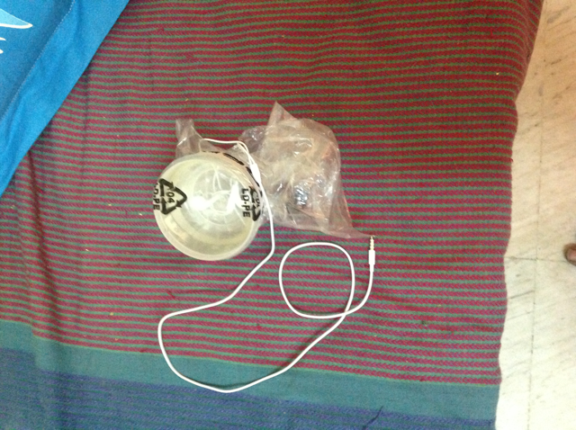
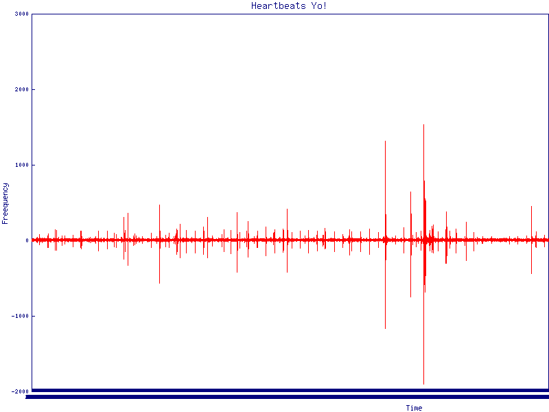

In a HeartBeat
Bangalore Perl Mongers
- IRC: wolf_
- Github: gvenkat
What we'll be doing
- Write some code to measure heart rate
- Use everyday devices such as microphone, digital camera for help
Heart Rate
- Number of heartbeats per unit time
- Normal HeartRate: 60 - 120 bpm
- Low OR High heart rate usually represents a deeper underlying issue
Your Heart
- Heart generally genrates two distinct sounds
- One is called lub the other dup
- Are heart one after another every beat

Stethescope
- Is an accoustic device for listening to internal sounds
- Used to listen to heart and lung sounds
- Now we're going to build one
Stethoscope
Measuring Sound
- You can use any tool to record sound from the microphone
- I used Audacity to record about 40 sec sample
The WAV file

while( ! eof( $wav ) ) {
$wav->read( $bytes, 4 );
if( $bytes eq 'data' ) {
$wav->read( $size, 4 );
$size = ( unpack( 'l', $size ) )[ 0 ];
while( ( $size -= 4 ) >= 0 ) {
$wav->read( $channel_data, 4 );
my ( $ch1, $ch2 ) = unpack( 'ss', $channel_data );
$csv->print( $ofh, [ $ch1, $ch2, $ch1 + $ch2 ] );
$ofh->write( "\n" );
}
How does this look?
Measuring the heart rate
- Litte more tricky to figure out the heart rate
- There's inherent noise
- Filter out all readings with amplitude not between 95 ~ 100
- Remove all readings too close to each other
- with the rest, 44,100 cycles in a second
- AVG( ( cycles / 44100 ) * 60 )
Stethoscope
Oximetry
- Light is passed through thin part of the body
- As heart pumps bloood through veins, measure difference in light absorption
Recording Video
- Use any phone camera, record video
- Use pen torch or similar pass light into finger
The Video
Quite Boring
The Video
Credits and Code
- Perl implementation Chapter 5 from excellent book Exploring everyday things with Ruby and R
- github.com/gvenkat/in-a-heartbeat
Thank You!